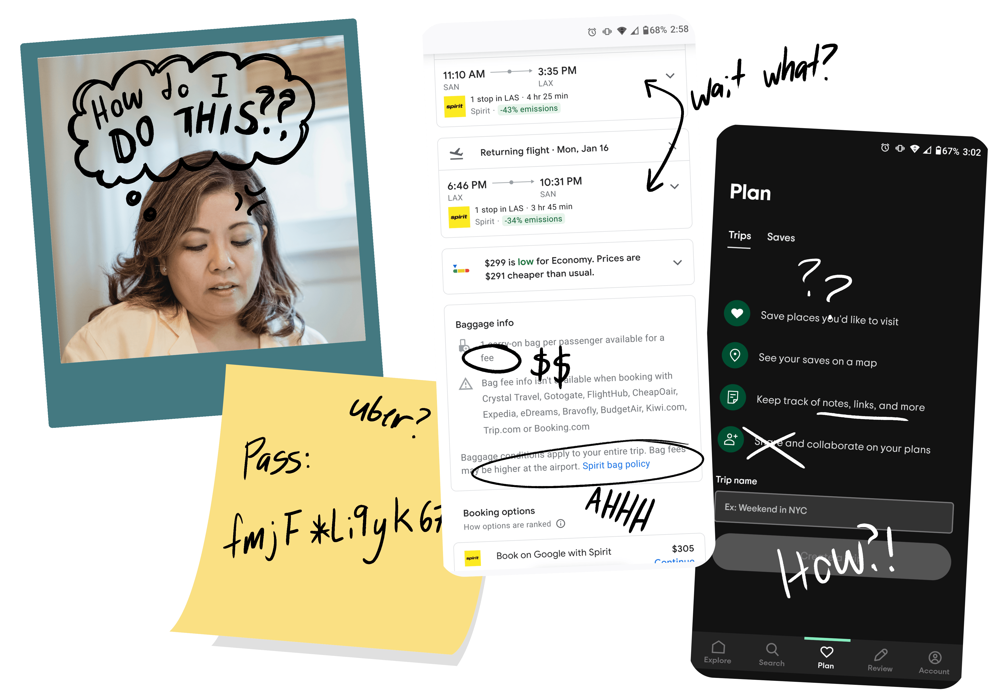

Remember when travel agents were a thing? Those were nice.
I spoke to a number of travelers aged 22 to 60 and found that most of them loved taking spontaneous trips but couldn’t keep track of everything they needed from airport taxis to hotel bookings. Their difficulties compounded when there was a change of any kind… One user even reminisced about the days when travel agents were commonly used.
Email for the tickets. App for the ride. So much stress comes from just trying to keep track of it all.
I sketched out an app that placed all tickets, emails, and activities on a single timeline so the user could see all plans they’d made so far and any changes could be dealt with visually. When a change occurred it would bump everything up or down the timeline. After the timeline, I wanted to keep the visual nature of the app by adding a feature for the user to import any documents necessary for their trip. That way they could stay within the app to pull up the hotel reservation they booked last week instead of trying to remember the password to the email they made just for this trip.
I want it to be easy to get started. Plan for now or for the future.
My final designs also included basic onboarding for the user, making it simple to import any information, plan trips for the future, or start dreaming up their perfect vacation. In the future, I’d love to add recommendation features so travelers could see what was popular in the local area or favorite their preferred Airbnb spots.

Need something
creative?
hit me up
Or keep this tab open forever, you'll come back to it later... right?
Carra, Potential User